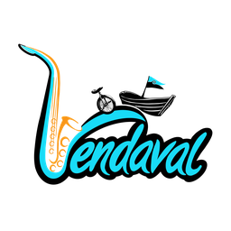

Cia. VENDAVAL · www.VENDAVAL.cat

AdminEdit on the page
The real website, editable
- Tap any text and type
- Tap a photo or a PDF link to replace it (or “Photos” in the bar)
- Move between pages and languages, then Publish once
- Easy-read texts: switch on Easy read in the accessibility menu first
Web texts
Every text in the 7 languages
- Catalan next to the others
- Easy read (accessibility option)
Site data
Agenda, photos, artists, PDFs
- Agenda (gigs typed by hand)
- Big photos, show photos, galleries
- Artists, workshops, credits, social links
- Which PDF each short link gives
Dossiers & riders
Texts of the PDFs
- Save → the changed PDFs are rebuilt by themselves (3–5 min)
- Layout checked: if a text no longer fits, the old PDF stays
First time: how to sign in
You sign in with a GitHub token (a long password made for this). You paste it once per browser; it stays there until you sign out. The same token works for the forms and for Edit on the page.
- Sign in to GitHub with your account (member of ciaVENDAVAL).
- Open New fine-grained token.
- Token name:
VENDAVAL admin. Expiration: up to one year (put a reminder in the calendar). - Resource owner:
ciaVENDAVAL. - Repository access: Only select repositories →
vendaval-web. - Permissions → Repository permissions → Contents: Read and write.
- Generate token, copy it, open Web texts above, choose Sign In Using Access Token and paste it.
If ciaVENDAVAL doesn't allow fine-grained tokens, use a classic token with only public_repo ticked.
Keep the token private, like a password. If it leaks, delete it on GitHub (Settings → Developer settings) and make a new one.
How it works
- Each Save (or Publish on the page) is one change on GitHub. The website is rebuilt automatically and shows it after about 3 minutes (reload the page). Everything stays in GitHub's history, so anything can be undone.
- Translations: a text changed in CA, ES or EN is translated into the other two of these by Softcatalà's free, open-source translator, inside the same GitHub job (no Google, no Amazon, no AI service). Check the result. To fix only one language, untick Translate in the on-page editor, or change CA, ES and EN in the same save.
- DE, FR, IT, JA are never machine-translated: they keep the old text, and the text goes on the list “Texts that need translation” (CHECK-REPORT.md §8, file
content/i18n/_needs-translation.json). Ask a Claude session or a native speaker to translate them. - Agenda: confirmed gigs come from the Nextcloud calendar. Change their date and place in the calendar, not here (here they are overwritten at the next sync). Gigs typed here by hand stay.
- Photos: upload the original as it is (it is never cropped); the web sizes are made automatically. To replace a photo everywhere: tap it with Edit on the page, or Assets → Photos (originals) → upload a file with the same name → Replace. Credit the photographer (Site data → Credits).
- PDFs: normally they are built from the texts in Dossiers & riders. A PDF made elsewhere can replace one (same file name: with Edit on the page, tap the PDF link). It is then marked “replaced by hand” and the scripts don't overwrite it until its text is updated. Max. 3 MB. Never fees or private data: this website is public.
- If a check finds a house-style problem (VENDAVAL in capitals, tyle lowercase, no “tothom”…), the site is still published and an issue opens on GitHub.
- On a phone it works too: in the forms the menu is behind ☰.
Forms: Sveltia CMS (open source, served from this site) · repo ciaVENDAVAL/vendaval-web · history of changes · build status